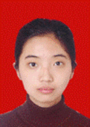

推着自己前行的逐梦人
路智淇，女，预备中共党员，外国语学院英语专业06级本科生。曾在07、08年连续两年获得国家奖学金和校优秀学生的荣誉称号,08年在英语专业四级 考试中获得91/100分，位居全国考生前列。08年赴香港教育学院交流学习,09年在第十三届“外研社杯”全国英语辩论赛上荣获三等奖。现已保送至清华 大学读英语语言文学研究生。
生命是自然给人类雕琢的宝石，诺贝尔的这句话，一直是她的座右铭。在她的整个生命中，尤其是在四年的大学生活中，为了不断进步，不断完善自身，她一直 在出色完成学业的基础上，一直让自己尽量去发掘生活中蕴藏的宝藏，每天去迎接新的挑战，正是因为秉着这
生命是自然给人类雕琢的宝石，诺贝尔的这句话，一直是她的座右铭。在她的整个生命中，尤其是在四年的大学生活中，为了不断进步，不断完善自身，她一直 在出色完成学业的基础上，一直让自己尽量去发掘生活中蕴藏的宝藏，每天去迎接新的挑战，正是因为秉着这
样的信念，才有了今天的她，有了满载美好回忆的大学 生活。她对于生活中美好的东西一直充满热情，对喜欢的东西会一直执着，从不会因为没有天分而气馁。她5岁起开始学习钢琴，虽然音乐是她的爱好，却从不是她的 强项，但尽管这样她也坚持着没有放弃，相信总有一天会用自己的手指带来美丽的音符。对艺术的热爱让她开始画画，虽然没有老师的指导，也坚持用自己的眼睛观 察世界，用自己的画笔绘出眼中的梦想：一朵花、几个水果、梦中出现的精灵，这样积攒下来，到了现在已经印出一本画册，记录着她生命的轨迹。然而音乐和绘画 带来的感动并不能够完全满足她表达的需要，她也把对生活的感悟和体会变成一篇篇文章，在报纸上发表，文字在人心中激荡起共鸣，读者来信纷至沓来，读着这些 热诚坦率的信件，她了解了有着相同经历的人们，知道了不同的人有着不同执着热爱的东西。
而她最喜欢的一直是学习语言。上大学前她最喜欢的学科就是英语，所以在学习英语方面也是最有干劲的，听说读写全方位发展，英语单科成绩常常是年级第 一，在国内国际竞赛中也获得过很多奖项，并且自然地在报志愿的时候选择了英语专业。直到今天，她都认为在东北师大外国语学院学习英语是她人生中最明智的选 择之一。外国语学院良好的学风，严谨的教学，在培养她的兴趣，发掘她的潜力方面功不可没；认真和善的老师，好学友爱的同学们让她在陌生的校园和集体中有着 家一样的感觉。因为兴趣浓厚，学习努力，她的成绩比较优秀，在外国语学院学习期间多次学期期末考试成绩位列年级第一，并为此在2007和2008年连续两 年获得教育部国家奖学金。因为成绩比较好，她在大一年级时光荣地入选为东北师范大学第一届优秀学生“四个百人团队”学业优秀团队的培育计划成员，得到了与 全校的优秀学生进行多方面深层次交流的互相学习机会，并以此为平台，不断完善自己的大学生涯规划，并为度过无悔的大学四年不懈努力。在2008年，她发挥 专业方面的特长，以让人满意的成绩通过大学英语专业四级考试（TEM4），获得91/100分，达到优秀等级，分数位居全国参加考试学生前列。有良好的学 习成绩作为保证，发挥专业方面的优势，她在校期间积极参加各项比赛，在有关英语的各项比赛中频频折桂，曾经获得外国语学院英语配音大赛一等奖、首届“春芽 杯”外语翻译大赛英译汉组二等奖和汉译英组三等奖、2007年“CCTV杯”全国英语演讲大赛东北师范大学赛区优秀奖和第十三届“外研社杯”全国英语辩论 赛东北师范大学校内选拔赛一等奖。从大一到大四年级，这些比赛不仅锻炼了她多方面的专业能力也锻炼了她的心理素质和应变能力，有了这些不同比赛的经验教 训，她在2009年参加了第十三届“外研社杯”全国英语辩论赛，紧张的辩论赛场、英语口语的高要求、经验的不足并没有让她畏惧退却，在三天的赛程中，她和 队友迅速地学习辩论的规律技巧，出色地发挥出自己的实力，毫不怯场，在辩论赛中赢过了很多名校，终于捧回了三等奖的奖杯，为六年来首次出战全国英语辩论赛 的学校博得了荣誉。
在打下扎实的专业基础同时，她尝试着进行科学研究工作，通过有创意的自主科研更好的发挥自己的专业知识，在2008年4月到2009年4月期间，她担 任东北师范大学2008年度大学生科研立项项目负责人，项目名为 “结合市场需求对国内口译专业教学的建议”，时间长达一年，在此期间她利用在香港交流学习的机会，通过与长春组员的合作，收集了大量第一手的材料，在香港 和内地进行了大规模调查，终于圆满完成自主科研立项的题目，获得了各方面的好评。
她提高自己专业能力、发挥特长的地点并不只限于校内，在大学期间她也在本着自己的兴趣特长不断进行社会实践，她在《作家》杂志社担任了两年的特聘翻 译，负责文学评论的板块，每月的文评因为翻译得准确优美而深受编辑的重视，在杂志中放在首页的位置。这类经验使她的理论和翻译水平都有了很大提高，另外由 于她对美术的爱好和知识，她在2009年美术学院的中美交流学术会议上担任论文翻译，翻译的文章在一部论文集中出版，她最近刚刚翻译了一本安森•基弗画册 的序文，将在2010年3、4月的《中国水彩》杂志上出版，让她在成为一个优秀的英语学习者的路上又前进了一步。
在赛场和考场之外，她也积极参加各项党团活动和社会实践活动，担任学生干部，努力丰富自己大学四年生活。在2006年9月刚入学军训的时候，她曾担任 外国语学院五连的副指导员，并获得军事教育训练“连嘉奖”。刚上大学不久，她被推选为入党积极分子，于2007年参加党校，以优秀的成绩毕业。2009年 她终于如愿以偿，加入了中国共产党，成为一名光荣的中国共产党预备党员，并在今年六月入选学校优秀党员百人团队。她曾在2006年9月到2007年09月 担任班级生活委员；于2007年9月担任外国语学院06级外语部部长，并组织了专四交流会、万圣节晚会等活动；于2006年12月加入社团联合会的国际学 生交流协会，并担任副会长的职务。在此期间，她们和会员干部一起策划了许多大型活动，比如国际文化交流周，国际学生足球和乒乓球友谊赛等活动。由于她在社 会活动和学习方面的出色表现，她于2007年6月获得东北师范大学外国语学院2006-2007学年优秀学生干部称号，于2007年10月获得外国语学院 2006级优秀学生称号，并于07和08年连续两年获得东北师范大学优秀学生称号，为此她深感荣幸。
为进一步开阔眼界、锻炼能力，她报名参加了东北师范大学和香港教育学院的交流项目，并成功入选，于2008年9月8日到2008年12月20 赴香港教育学院进行学习。在此期间，她不但取得了优秀的成绩，更是积极与香港同学积极交流，赢得了同学和老师的好评。
大学三年的知识积累为她打下了坚实的基础，参加各种比赛、组织活动和在香港交流的经验拓展了她的眼界，丰富了人生经验，正是由这些作为保障，她在去年 成功申请清华大学的保送研究生，顺利通过了笔试和口试，终于能在今年夏天光荣成为一名清华的研究生。
虽然多年来的努力以这样的形式得到了肯定，她并没有为此松懈。在刚刚过去的这一年，她在梅河口实验高中进行教学实习，每天为60个孩子讲课，看着他们 恍然大悟的表情，精神上无比满足。在结束实习后她在总结经验的同时，不断磨练自己的专业技能，参加了托福考试，获得了115/120分的好成绩。此外，她 也参加了目前东北师范大学翻译教材的编写，并有希望在不久的将来出版第一本自己参与编写的教科书。
在师大学习的这几年她发挥了自己刻苦学习、多思求实的精神，不仅学业上取得了优异的成绩，也发挥了自己各方面的才能，最大程度的锻炼自己。成为一名光 荣的预备党员，她希望能在今后继续克服缺点，迎难而上，使自己不负党员的光荣身份。在这四年内，她充分打磨了自己生命的宝石，让它在即将毕业的时刻中熠熠 生光。同学们，为了让自己的生命发出夺目的光芒，你们做好准备了吗？
而她最喜欢的一直是学习语言。上大学前她最喜欢的学科就是英语，所以在学习英语方面也是最有干劲的，听说读写全方位发展，英语单科成绩常常是年级第 一，在国内国际竞赛中也获得过很多奖项，并且自然地在报志愿的时候选择了英语专业。直到今天，她都认为在东北师大外国语学院学习英语是她人生中最明智的选 择之一。外国语学院良好的学风，严谨的教学，在培养她的兴趣，发掘她的潜力方面功不可没；认真和善的老师，好学友爱的同学们让她在陌生的校园和集体中有着 家一样的感觉。因为兴趣浓厚，学习努力，她的成绩比较优秀，在外国语学院学习期间多次学期期末考试成绩位列年级第一，并为此在2007和2008年连续两 年获得教育部国家奖学金。因为成绩比较好，她在大一年级时光荣地入选为东北师范大学第一届优秀学生“四个百人团队”学业优秀团队的培育计划成员，得到了与 全校的优秀学生进行多方面深层次交流的互相学习机会，并以此为平台，不断完善自己的大学生涯规划，并为度过无悔的大学四年不懈努力。在2008年，她发挥 专业方面的特长，以让人满意的成绩通过大学英语专业四级考试（TEM4），获得91/100分，达到优秀等级，分数位居全国参加考试学生前列。有良好的学 习成绩作为保证，发挥专业方面的优势，她在校期间积极参加各项比赛，在有关英语的各项比赛中频频折桂，曾经获得外国语学院英语配音大赛一等奖、首届“春芽 杯”外语翻译大赛英译汉组二等奖和汉译英组三等奖、2007年“CCTV杯”全国英语演讲大赛东北师范大学赛区优秀奖和第十三届“外研社杯”全国英语辩论 赛东北师范大学校内选拔赛一等奖。从大一到大四年级，这些比赛不仅锻炼了她多方面的专业能力也锻炼了她的心理素质和应变能力，有了这些不同比赛的经验教 训，她在2009年参加了第十三届“外研社杯”全国英语辩论赛，紧张的辩论赛场、英语口语的高要求、经验的不足并没有让她畏惧退却，在三天的赛程中，她和 队友迅速地学习辩论的规律技巧，出色地发挥出自己的实力，毫不怯场，在辩论赛中赢过了很多名校，终于捧回了三等奖的奖杯，为六年来首次出战全国英语辩论赛 的学校博得了荣誉。
在打下扎实的专业基础同时，她尝试着进行科学研究工作，通过有创意的自主科研更好的发挥自己的专业知识，在2008年4月到2009年4月期间，她担 任东北师范大学2008年度大学生科研立项项目负责人，项目名为 “结合市场需求对国内口译专业教学的建议”，时间长达一年，在此期间她利用在香港交流学习的机会，通过与长春组员的合作，收集了大量第一手的材料，在香港 和内地进行了大规模调查，终于圆满完成自主科研立项的题目，获得了各方面的好评。
她提高自己专业能力、发挥特长的地点并不只限于校内，在大学期间她也在本着自己的兴趣特长不断进行社会实践，她在《作家》杂志社担任了两年的特聘翻 译，负责文学评论的板块，每月的文评因为翻译得准确优美而深受编辑的重视，在杂志中放在首页的位置。这类经验使她的理论和翻译水平都有了很大提高，另外由 于她对美术的爱好和知识，她在2009年美术学院的中美交流学术会议上担任论文翻译，翻译的文章在一部论文集中出版，她最近刚刚翻译了一本安森•基弗画册 的序文，将在2010年3、4月的《中国水彩》杂志上出版，让她在成为一个优秀的英语学习者的路上又前进了一步。
在赛场和考场之外，她也积极参加各项党团活动和社会实践活动，担任学生干部，努力丰富自己大学四年生活。在2006年9月刚入学军训的时候，她曾担任 外国语学院五连的副指导员，并获得军事教育训练“连嘉奖”。刚上大学不久，她被推选为入党积极分子，于2007年参加党校，以优秀的成绩毕业。2009年 她终于如愿以偿，加入了中国共产党，成为一名光荣的中国共产党预备党员，并在今年六月入选学校优秀党员百人团队。她曾在2006年9月到2007年09月 担任班级生活委员；于2007年9月担任外国语学院06级外语部部长，并组织了专四交流会、万圣节晚会等活动；于2006年12月加入社团联合会的国际学 生交流协会，并担任副会长的职务。在此期间，她们和会员干部一起策划了许多大型活动，比如国际文化交流周，国际学生足球和乒乓球友谊赛等活动。由于她在社 会活动和学习方面的出色表现，她于2007年6月获得东北师范大学外国语学院2006-2007学年优秀学生干部称号，于2007年10月获得外国语学院 2006级优秀学生称号，并于07和08年连续两年获得东北师范大学优秀学生称号，为此她深感荣幸。
为进一步开阔眼界、锻炼能力，她报名参加了东北师范大学和香港教育学院的交流项目，并成功入选，于2008年9月8日到2008年12月20 赴香港教育学院进行学习。在此期间，她不但取得了优秀的成绩，更是积极与香港同学积极交流，赢得了同学和老师的好评。
大学三年的知识积累为她打下了坚实的基础，参加各种比赛、组织活动和在香港交流的经验拓展了她的眼界，丰富了人生经验，正是由这些作为保障，她在去年 成功申请清华大学的保送研究生，顺利通过了笔试和口试，终于能在今年夏天光荣成为一名清华的研究生。
虽然多年来的努力以这样的形式得到了肯定，她并没有为此松懈。在刚刚过去的这一年，她在梅河口实验高中进行教学实习，每天为60个孩子讲课，看着他们 恍然大悟的表情，精神上无比满足。在结束实习后她在总结经验的同时，不断磨练自己的专业技能，参加了托福考试，获得了115/120分的好成绩。此外，她 也参加了目前东北师范大学翻译教材的编写，并有希望在不久的将来出版第一本自己参与编写的教科书。
在师大学习的这几年她发挥了自己刻苦学习、多思求实的精神，不仅学业上取得了优异的成绩，也发挥了自己各方面的才能，最大程度的锻炼自己。成为一名光 荣的预备党员，她希望能在今后继续克服缺点，迎难而上，使自己不负党员的光荣身份。在这四年内，她充分打磨了自己生命的宝石，让它在即将毕业的时刻中熠熠 生光。同学们，为了让自己的生命发出夺目的光芒，你们做好准备了吗？